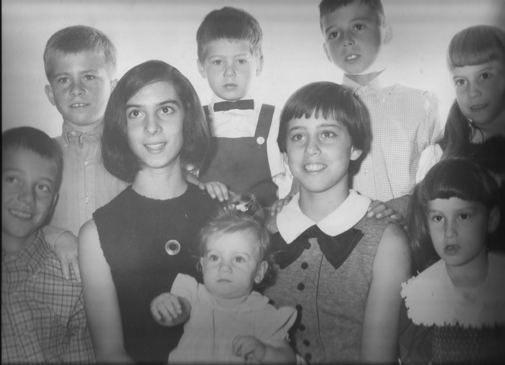
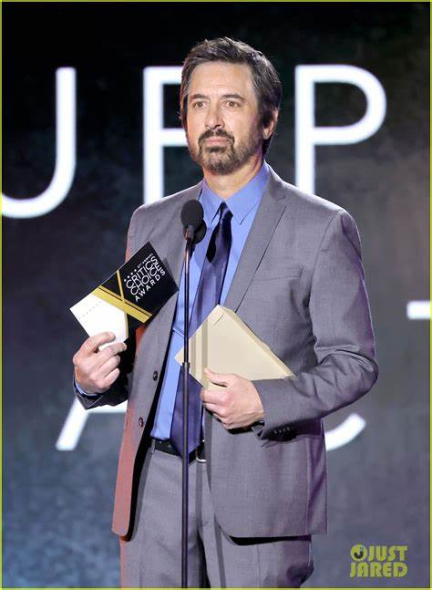
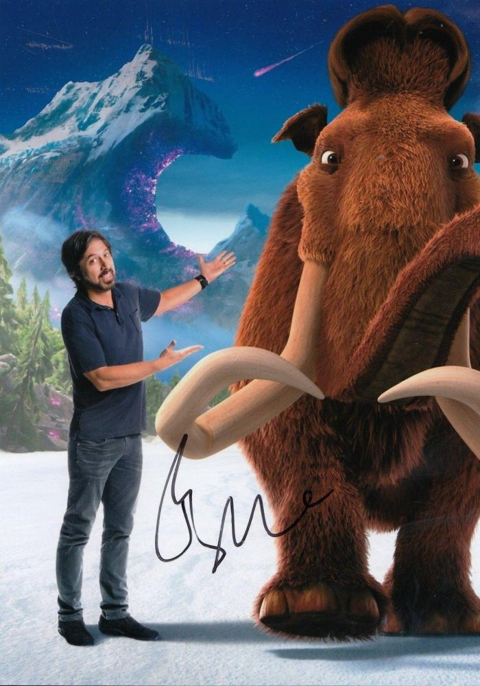

Raymond Albert Romano is an American stand-up comedian, actor and screenwriter. He is best known for his role
as Ray
Barone on the CBS sitcom Everybody Loves Raymond, for which he received an Emmy Award, and as the voice of Manny
in
the Ice Age film series.
He created and starred in the TNT comedy drama Men of a Certain Age (2009–2011). From 2012
to 2015, Romano had a recurring role as Hank Rizzoli, a love interest of Sarah Braverman in the NBC series
Parenthood. More recently, he co-starred in the romantic comedy The Big Sick (2017) and portrayed mob lawyer
Bill
Bufalino in Martin Scorsese's epic crime film The Irishman (2019). Since 2017, Romano has portrayed Rick
Moreweather
in the Epix comedy-drama series Get Shorty.
Early Life

childhood
Romano was born in Queens, New York City, the second son of Luciana "Lucie" (née Fortini), a piano teacher,
and
Albert Romano, a real estate agent and engineer. He is of Italian descent. He grew up in the
Forest Hills neighborhood of Queens. He has an older brother, Richard (born 1956), a sergeant with the NYPD,
and a younger brother, Robert (born c. 1966), a second grade teacher in New York City.
Romano attended elementary and middle school at Our Lady Queen of Martyrs in Forest Hills. After transferring
from
Archbishop Molloy High School, Romano graduated from Hillcrest High School in 1975. He was in the same high
school class as Fran Drescher. Before getting into show business, Romano briefly attended Queens College, in
Flushing, New York, where he studied accounting.
Comedy career

Awards
Romano started performing stand-up comedy in the early 1990s. He quickly gained a following, and he was soon
invited to appear on The Late Show with David Letterman. His appearance on Letterman led to him landing the
role
of Ray Barone on the CBS sitcom Everybody Loves Raymond.
Everybody Loves Raymond ran for nine seasons from 1996 to 2005. The show was a critical and commercial
success,
and it won numerous awards, including two Emmy Awards for Romano. Romano's portrayal of Ray Barone was a major
factor in the show's success. He brought a relatable and down-to-earth quality to the role, and he made Ray
Barone a character that audiences could easily root for. Romano returned to television as a record promoter in
HBO's short-lived Vinyl (2016), about the 1970s music scene in New York City,
Ray and Manny

Autograph
Film and television career
In addition to his work on Everybody Loves Raymond, Romano has also starred in a number of other films and
television shows. He has provided the voice of Manny the mammoth in the Ice Age film series
(2002-present). He
has also appeared in the films The Big Sick, Paddleton, and Made for Love. In
2019,
he starred in the
critically acclaimed comedy series Get Shorty.
Most important movies
Ray Romano is primarily known for his work in television, particularly his role in the long-running sitcom
"Everybody Loves Raymond." While he has appeared in several films, he is more celebrated for his television
work. Nevertheless, here are five notable movies in which Ray Romano has appeared:
Ice Age (2002)
Ray Romano provided the voice for the character Manny the woolly mammoth in this popular animated film and
its sequels. While it's an animated movie, his voice work in the "Ice Age" franchise is one of his most
recognizable film contributions.
Welcome to Mooseport (2004)
In this comedy film, Ray Romano plays the role of Handy Harrison, a local handyman who runs for mayor
against a former President of the United States (played by Gene Hackman). The film is a light-hearted
political comedy.
Eulogy (2004)
Ray Romano had a supporting role in this dark comedy film, where he played the character named Skip Collins.
The film revolves around a dysfunctional family coming together for a funeral, and Romano's performance adds
to the quirky humor.
Grilled (2006)
In this comedy film, Ray Romano stars alongside Kevin James as two meat salesmen who get caught up in
various misadventures. While not a major critical or commercial success, it's one of Romano's film roles.
The Big Sick (2017)
Although Ray Romano is not the lead in this film, he plays a significant supporting role as Terry, the
father of one of the main characters. "The Big Sick" is a critically acclaimed romantic comedy-drama that
received widespread praise for its writing and performances.
While Ray Romano's film career may not be as extensive as his television work, these movies showcase some of
his diverse roles and contributions to the world of cinema.
Awards
Association
Year
Movie / Serie
Category
CableACE Awards
1995
Dr. Katz, Professional Therapist
Animated Programming Special or Series (as Producer)
TCA Awards
1999
Everybody Loves Raymond
Individual Achievement in Comedy
Viewers for Quality Television Awards
1999
Everybody Loves Raymond
Best Actor in a Quality Comedy Series
Viewers for Quality Television Awards
2000
Everybody Loves Raymond
Best Actor in a Quality Comedy Series
American Comedy Awards
2000
Everybody Loves Raymond
Funniest Male Performer in a TV Series
TV Guide Awards
2001
Everybody Loves Raymond
Actor of the Year in a Comedy Series
People's Choice Awards
2002
Everybody Loves Raymond
Favorite Male Television Performer
Primetime Emmy Awards
2002
Everybody Loves Raymond
Outstanding Lead Actor in a Comedy Series
Primetime Emmy Awards
2003
Everybody Loves Raymond
Outstanding Comedy Series
Screen Actors Guild Awards
2003
Everybody Loves Raymond
Favorite Male Television Performer
People's Choice Awards
2003
Everybody Loves Raymond
Outstanding Performance by an Ensemble in a Comedy Series